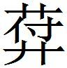
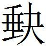
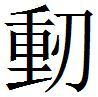
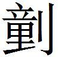
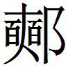

楚四
或謂楚王
或謂楚王曰：「臣聞從者欲合天下以朝大王，臣願大王聽之也。〔一〕 夫因詘為信〔二〕 ，舊患有成〔三〕 ，勇者義之。攝禍為福，〔四〕 裁少為多，知者官之〔五〕 。夫報報之反〔六〕 ，墨墨之化，〔七〕 唯大君能之。禍與福相貫〔八〕 ，生與亡為鄰，不偏於死〔九〕 ，不偏於生〔一〇〕 ，不足以載大名〔一一〕 。無所寇艾〔一二〕 ，不足以橫世〔一三〕 。夫秦捐德絕命之日久矣，而天下不知。今夫橫人嚂口利機〔一四〕 ，上干主心，下牟〔一五〕 百姓，公舉〔一六〕 而私取利，是以國權輕於鴻毛，而積禍重於丘山。」〔一七〕
〔一〕 鮑本 燕昭末年，用蘇代說，復約從。此二十二年。春申遂為從長。正曰：此策 時不可考，以為春申合從，無明據，與下章不同。
〔二〕 鮑本 詘，謂懷王劫死。正曰：不專指此。
〔三〕 鮑本 「舊」作「奮」。奮於患難，以能有成。札记 今本「舊」作「奮」。
〔四〕 鮑本 補曰：攝，收也。
〔五〕 鮑本 官，尊榮之稱。正曰：栽之，謂制其宜也；官之，謂主其事也。
〔六〕 鮑本 報，猶反也。言屈申禍福，相反不一。
〔七〕 鮑本 墨，默同。化，猶治也。言治之其未著。正曰：報報之反，言反復相尋。墨墨之化，言變化無形。惟大君能之者，言其轉旋變化之妙，又非勇智者所可及也。新序 ，「晉平公謂師曠，甚矣，子之墨墨也。曠曰，天下有五墨墨」。史·商君傳 ，「殷紂墨墨以亡」。漢書竇嬰傳 ，「墨墨不得意」。皆同。此字義或有異。
〔八〕 鮑本 貫，猶通。
〔九〕 鮑本 偏，猶專也。死，謂患難。
〔一〇〕 鮑本 專于衛生，加兩臂重於天下者。
〔一一〕 姚本 「載」一作「戴」。鮑本 正曰：載，承也。不專一於致死，不專一於求生者，不足以承載大名。
〔一二〕 鮑本 寇，外兵。艾，己所懲創。正曰：寇，猶賊害。艾即刈。不遭賊害而懲創，則不足以橫行於世。
〔一三〕 鮑本 橫，言莫之敵。
〔一四〕 鮑本 集韻 ，嚂，聲也。言聲說所利之事。正曰：嚂，力暫切，食貌。利機者，利其發動之機。
〔一五〕 鮑本 牟，取也。
〔一六〕 鮑本 舉，謂舉措。
〔一七〕 鮑本 補曰：此主從而黜橫者之說。然意多未詳。
魏王遺楚王美人
魏王〔一〕 遺楚王美人，楚王說之。夫人鄭袖知王之說新人也，甚愛新人。衣服玩好，擇其所喜而為之；宮室臥具，擇其所善〔二〕 而為之。愛之甚於王。王曰：「婦人所以事夫者，色也；而妒者，其情也。今鄭袖知寡人之說新人也，其愛之甚於寡人，此孝子之所以事親，忠臣之所以事君也。」
〔一〕 鮑本 哀。正曰：無考。
〔二〕 姚本 「善」一作「喜」。
鄭袖知王以己為不妒也，因謂新人曰：「王愛子美矣。雖然，惡子之鼻。子為見王，則必掩子鼻〔一〕 。」新人見王，因掩其鼻。王謂鄭袖曰：「夫新人見寡人，則掩其鼻，何也？」鄭袖曰：「妾知也。」王曰：「雖惡必言之。」鄭袖曰：「其似惡聞君王之臭也〔二〕 。」王曰：「悍哉！」令劓之，無使逆命〔三〕 。
〔一〕 鮑本 為此惡鼻故。正曰：為，如字。
〔二〕 鮑本 無「君」字。王蓋有臭疾。札记 丕烈案：韓子 無。
〔三〕 鮑本 不通新人之言。補曰：「雖惡」之「惡」，如字。
楚王后死
楚王后死〔一〕 ，未立后也。謂昭魚曰：「公何以不請立后也？」昭魚曰：「王不聽，是知〔二〕 困而交絕於后〔三〕 也。」「然則〔四〕 不買〔五〕 五雙珥，令其一善而獻之王，明日視善珥所在，因請立之。」〔六〕
〔一〕 鮑本 自張儀拘時，獨言鄭袖，則后死久矣。正曰：無據。使真為懷王，鄭袖必不待視珥所在矣。
〔二〕 鮑本 「知」作「智」。
〔三〕 鮑本 「於」作「立」。補曰：一本「立」作「於」。新所立后。
〔四〕 鮑本 說者辭。
〔五〕 鮑本 補曰：「不買」上宜有「何」字。
〔六〕 鮑本 補曰：說見齊策 。此等何足記載！
莊辛謂楚襄王
莊辛謂楚襄王〔一〕 曰：「君王左州侯，右夏侯，輦從鄢陵君與壽陵君〔二〕 ，專淫逸侈靡，不顧國政，郢都必危矣。」襄王曰：「先生老悖乎〔三〕 ？將以為楚國祅祥乎？」莊辛曰：「臣誠見其必然者也，非敢以為國祅祥也。君王卒幸四子者不衰，楚國必亡矣。臣請辟於趙，淹留以觀之〔四〕 。」莊辛去之趙，留五月，秦果舉鄢、郢、巫、上蔡、陳之地〔五〕 ，襄王流揜於城陽〔六〕 。於是使人發騶〔七〕 ，徵〔八〕 莊辛於趙。莊辛曰：「諾。」莊辛至，襄王曰：「寡人不能用先生之言，今事至於此，為之奈何？」
〔一〕 姚本 荀子 ，「莊辛謂楚莊王」。鮑本 楚人。補曰：元和姓纂 ，莊辛，楚莊王之後，以謚為號。
〔二〕 鮑本 皆楚之寵幸臣也。輦從，謂輦出則二人從之。
〔三〕 鮑本 悖，背道也。正曰：悖，亂也，言老而耄亂也。
〔四〕 鮑本 淹，亦留。
〔五〕 鮑本 此二十一年，白起拔郢，置南郡。
〔六〕 鮑本 「城」作「成」。流，謂走；揜，覆也，謂自匿。成陽，屬汝南；若城陽，乃齊也。補曰：史 ，「東北保於陳城」，當是指此城爾。
〔七〕 鮑本 騶，車御也。
〔八〕 鮑本 徵，謂召也。
莊辛對曰：「臣聞鄙語曰：『見兔而顧犬，未為晚也；亡羊而補牢〔一〕 ，未為遲也。』臣聞昔湯、武以百里昌，桀、紂以天下亡。今楚國雖小，絕長續短，猶以數千里，豈特百里哉？
〔一〕 鮑本 牢，閉養之圈。
「王獨不見夫蜻蛉〔一〕 乎？六足四翼，飛翔乎天地之間，俛啄蚊虻而食之，仰承甘露而飲之，自以為無患，與人無爭也。不知夫五尺童子，方將調鈆〔二〕 膠絲〔三〕 ，加己乎四仞之上，而下為螻蟻食也。蜻蛉其小者也〔四〕 ，黃雀因是以。俯噣〔五〕 白粒，仰棲茂樹，鼓翅〔六〕 奮翼，自以為無患，與人無爭也。不知夫公子王孫，左挾彈，右攝丸〔七〕 ，將加己乎十仞之上，以其類為招〔八〕 。晝游乎茂樹，夕調乎酸鹹〔九〕 ，倏忽之間，墜於公子之手〔一〇〕 。
〔一〕 鮑本 蟲，一名「桑根」。
〔二〕 鮑本 「鈆」作「飴」。補曰：「鈆」當作「飴」。飴，米糱所煎，調以餌之。又施膠於絲以繫之。正曰：顏師古急就章注，「以糱消末，取汁而煎之，渜弱者為飴，形怡怡然。此謂調以膠絲也」。淮南子 ，「柳下惠見飴曰，『可以養老』；盜跖見飴曰，『可以黏牡』」。呂氏春秋 ，「仁人得飴，以養疾侍老；跖、蹻得飴，以開閉取楗，皆以黏也」。札记 今本「鈆」作「飴」，乃誤涉鮑也。
〔三〕 鮑本 補曰：一本標「膠」或作「繆」，言糾繆纏繞也。札记 丕烈案：新序 作「膠絲竿」。
〔四〕 鮑本 無「蜻蛉其小者也」六字。札记 丕烈案：新序 有。
〔五〕 鮑本 噣，啄也。蓋以喙啄。補曰：一本「噣」作「囑」。札记 丕烈案：新序 作「啄」。
〔六〕 鮑本 翅，強羽。
〔七〕 鮑本 攝，引持也。
〔八〕 鮑本 補曰：一本標後語 云「以其頸為的」。「的」，或為「招」。札记 丕烈案：「類」字形近之訛也。李善注詠懷詩 引作「以其頸為的」。「的」、「招」同義。齊策 所謂「今夫鵠的」，魏策 所謂「兵為招質」者也。
〔九〕 鮑本 以為饌也。
〔一〇〕 姚本 三同。集無以上十字。曾本云，一本有此十字。
「夫雀〔一〕 其小者也，黃鵠〔二〕 因是以。游於江海，淹乎大沼，府噣䱧〔三〕 鯉，仰嚙陵衡〔四〕 ，奮其六翮〔五〕 ，而凌清風，飄搖乎高翔，自以為無患，與人無爭也。不知夫射者，方將脩其

盧〔六〕 ，治其繒繳〔七〕 ，將加己乎百仞之上。彼礛磻〔八〕 ，引微繳，折清風而抎〔九〕 矣。故晝游乎〔一〇〕 江河，夕調乎〔一一〕 鼎鼐〔一二〕 。〔一〕 姚本 一本，「夫黃雀」。
〔二〕 鮑本 鵠，鴻也。正曰：水鳥也。
〔三〕 鮑本 「䱧」作「鱔」。字書無「䱧」字。札记 丕烈案：新序 作「鰋鯉」。
〔四〕 鮑本 衡，香草。正曰：周禮 ，「蔆，芰蔆」。「陵」、「蔆」字通。凡將篇 ，「陵，從遴，今俗書作菱」。武陵記 云，「四角、三角曰芰，兩角曰菱」。衡與菱並言即荇，接余，水草也。
〔五〕 鮑本 翮，羽本。
〔六〕 鮑本 「 」作「碆」。字書無「 」字。「碆」與「 」聲近。集韻 ，「碆」可為鏃。「盧」，「旅」同，黑弓也。正曰：下文「磻」，即「碆」，此不當復有「黑弓」之注，恐是此字形聲訛。札记 「 」作「碆」，乃誤涉鮑也。丕烈案「 」當讀為「蒲」。左氏 所謂「董澤之蒲」也。新序 作「修其防翳」，不與此同。
〔七〕 鮑本 「繒」作「矰」。正曰：「矰」通，見三輔黃圖。矰，弋射矢。繳，生絹縷。補曰：繳，音灼。札记 今本「繒」作「矰」，乃誤涉鮑也。丕烈案：新序 是「繒」字。
〔八〕 姚本續 ：「磻」，補左、補何二切。以石維繳也。鮑本 「礛」作「㔋」。「㔋」，利也。集韻 ，磻，以石著維繳也。正曰：廣韻 ，礛，力甘反，治玉之石。札记 丕烈案：新序 作「揚微波」。「波」、「磻」同字。
〔九〕 鮑本 以繫矢，從高。集韻 ，抎，下也，如折然。補曰：抎，羽粉反。徐按呂氏春秋 ，與「隕」同。
〔一〇〕 姚本 集，一無「乎」字。
〔一一〕 姚本 集，一無「乎」字。
〔一二〕 鮑本 鼐，鼎之絕大者。
「夫黃鵠其小者也，蔡聖侯〔一〕 之事因是以。南游乎高陂〔二〕 ，北陵乎巫山，飲茹谿流〔三〕 ，食湘波之魚〔四〕 ，左抱幼妾，右擁嬖女，與之馳騁乎高蔡之中〔五〕 ，而不以國家為事。不知夫子發方受命乎宣王〔六〕 ，繫己以〔七〕 朱絲而見之也〔八〕 。
〔一〕 鮑本 「聖」作「靈」。春秋 及史 無「聖侯」。補曰：「聖」當作「靈」，或者古通稱歟。下同。札记 丕烈案：吳說非，見下。新序 作「蔡侯」。詠懷詩 注引作「蔡聖侯因是已」。延叔堅戰國策論 曰，因是已，因事已，復有事也」。依此，當讀「以」字句絕，連下者誤。上下句盡同。
〔二〕 鮑本 陂，阪也。正曰：池也。此引說文 上一句。
〔三〕 姚本續 ：後語 「飲茹溪之流」注云，茹溪，巫山之溪。鮑本 茹，飲馬也。故與吐反。
〔四〕 鮑本 湘水，出零陵，屬長沙。
〔五〕 鮑本 即上蔡。
〔六〕 鮑本 「宣」作「靈」。補曰：「宣」當作「靈」。札记 丕烈案：吳氏說非，新序 作「宣」。此策 文本作「聖侯」、「宣王」，非春秋 蔡靈侯、楚靈王事。子發事楚宣，高誘注淮南子 有其證。
〔七〕 姚本 三同，無「以」字。
〔八〕 鮑本 昭十一年，楚子誘蔡侯般，殺之于申。經傳不書子發，蓋使子發召之。楚子，靈王。若宣王，蔡滅八十年矣。道應訓 「子發伐蔡，宣王郊迎」，人間訓 又言「獲罪威王」者，皆失考也。
「蔡聖侯之事其小者也，君王之事因是以。左州侯，右夏侯，輩從鄢陵君與壽陵君〔一〕 ，飯封祿之粟〔二〕 ，而戴方府之金〔三〕 ，與之馳騁乎雲夢之中，而不以天下國家為事。不〔四〕 知夫穰侯方受命乎秦王〔五〕 ，填黽塞之內〔六〕 ，而投己乎黽塞之外。」
〔一〕 姚本 一無此「輩」字。鮑本 「輩」作「輦」。補曰：「鄢陵」，新序 作「新安」。札记 今本「輩」作「輦」。
〔二〕 鮑本 所封之祿。
〔三〕 鮑本 「戴」作「載」。方，四方。金，其所貢。札记 今本「戴」作「載」。
〔四〕 鮑本 「不」上有「而」字。札记 丕烈案：新序 無。
〔五〕 鮑本 昭。
〔六〕 鮑本 填，兵滿也。江夏有鄳，即魏策 鄳隘之塞。補曰：策 本韓 ，鮑改作魏 ，故云。然燕策 亦有。案，左氏 定四年，左司馬戌謂子常「直轅、冥阨」注，漢東隘道。史·春申傳 ，秦踰黽隘之塞而攻楚。蘇秦傳 ，塞鄳阨。正義 云，申州羅山縣，本漢鄳縣，州有清平關，蓋古鄳縣之阨塞。又云，石城山，楚母家涉鄳塞。亦指此。而正義 誤以為河東太陽鄍城，初不與楚相涉，何遽忘前說也？大事記 作「鍾山縣」。按唐志 ，申州有鍾山、羅山兩縣。申州，今信陽軍也。黽、鄳字同，謨萌反。隘，當從阨音。
襄王聞之，顏色變作，身體戰慄。於是乃以執珪而授之為陽陵君〔一〕 ，與淮北之地也〔二〕 。〔三〕
〔一〕 姚本 一本無「以」字。曾，「為」上有「封之」二字。
〔二〕 鮑本 無「也」字。
〔三〕 鮑本 彪謂：此策 ，天下之善規也。襄王雖失之東隅，而收之桑榆。故其季年保境善鄰，差為無事，此策 為有力焉。補曰：「與淮北」云云句上有缺文。新序 曰，「身體悼栗，曰『謹受令』。乃封莊辛為城陵君而用計焉。與舉淮北之地十二諸侯」。後語 云，「而與謀秦，復取淮北之地」。大事記 ，頃襄既失郢都，復召莊辛，聞其言，至於色變體慄，此其所以能稍復故地也。復取江南十五邑，在頃襄二十三年。新序 又載，楚襄用莊辛計，舉淮北之地十二諸侯。蓋喪亂之後，補敗扶傾之計，皆出於辛，特不能大有所為耳。劉辰翁極詆辛小人，謂何策之有？皆失考。
齊明說卓滑以伐秦
齊明說卓滑〔一〕 以伐秦，滑不聽也。齊明謂卓滑曰：「明之來也〔二〕 ，為樗里疾卜交也。明說楚大夫以伐秦，皆受明之說也，唯公弗受也，臣有辭以報樗里子矣。」卓滑因重之〔三〕 。
〔一〕 鮑本 疑即淖滑。
〔二〕 鮑本 蓋自秦來。
〔三〕 鮑本 此明因敗為成之說也。樗里，滑之所欲交也。滑不聽明，明懼見輕，為善於疾，而言以此報疾，故滑重之。
或謂黃齊
或謂黃齊曰：「人皆以謂公不善於富摯〔一〕 。公不聞老萊子〔二〕 之教孔子事君乎？示之其齒之堅也〔三〕 ，六十而盡相靡也〔四〕 。今富摯能〔五〕 ，而公重〔六〕 不相善也，是兩盡也〔七〕 。諺曰〔八〕 ：『見君之乘，下之〔九〕 ；見杖，起之〔一〇〕 。』今也，王愛富摯，而公不善也，是不臣也。」〔一一〕
〔一〕 鮑本 皆楚人。
〔二〕 鮑本 楚有道之士。
〔三〕 姚本 一本「齒」下有「曰齒」二字。
〔四〕 鮑本 「靡」，「摩」同，研也。
〔五〕 鮑本 有材能。
〔六〕 鮑本 重，猶甚。
〔七〕 鮑本 補曰：謂兩強俱斃，若齒之相摩，以就盡也。
〔八〕 鮑本 傳言曰「諺」。
〔九〕 鮑本 乘，馬也。在車則下。
〔一〇〕 鮑本 在坐則起。補曰：「下」，音戶。「起」，音去，上聲。
〔一一〕 鮑本 彪謂：王之所愛，誠善人也，正人也。尊之敬之，禮也。如不善不正，方當為王力排而亟去之。今曰王愛之亦愛，何義也？此正盍以富摯能為足愛也。夫能之不善不正亦多矣，不可不察也。補曰：說苑 ，「常從告老子曰，『舌之存也，豈非以其治之柔邪？齒之亡也，豈非以其剛邪』」？孔叢子 云，「老萊子謂子思曰，『子不見夫齒乎？雖堅剛，卒盡相摩；舌柔順，終以不敝』」。按史記 及漢志 並云，孔子與老子、老萊子同時，孔叢子 所記，舛也。
長沙之難
長沙〔一〕 之難，楚太子橫為質於齊。楚王死，薛公歸太子橫，因與韓、魏之兵，隨而攻東國。太子懼〔二〕 。昭蓋曰：「不若令屈署以新〔三〕 東國為和於齊以動秦。秦恐齊之敗東國〔四〕 ，而令行於天下也，必將救我。」太子曰：「善。」遽令屈署以東國為和於齊〔五〕 。秦王〔六〕 聞之懼，令辛〔七〕 戎告楚曰：「毋與齊東國，吾與子出兵矣。」
〔一〕 鮑本 長沙，荊州國。懷二十九年，秦大破楚，楚王恐，使太子質齊。楚蓋破於此。
〔二〕 鮑本 本其初言之，亦明此非新立王也。
〔三〕 鮑本 「新」字疑衍。
〔四〕 鮑本 上言齊興兵攻故地，此恐其敗。
〔五〕 鮑本 此即子良之策，蓋與署偕。
〔六〕 鮑本 昭。
〔七〕 鮑本 「辛」作「羋」。補曰：當作「羋」。
有獻不死之藥於荊王者
有獻不死之藥於荊王者，謁者操以入。中射之士〔一〕 問曰：「可食乎？」曰：「可。」因奪而食之。王怒，使人殺中射之士。中射之士使人說王曰：「臣問謁者，謁者曰可食，臣故食之。是臣無罪，而罪在謁者也。且客獻不死之藥，臣食之而王殺臣，是死藥也。王殺無罪之臣，而明人之欺王。」王乃不殺。〔二〕
〔一〕 鮑本 射人之在中者。正曰：韓非子 注，中射士，官，有上、中、下。
〔二〕 鮑本 彪謂：此謾上，乃不可不殺。荊王赦之，以不能答之也。於答是也何有？謁者曰「可食」，非謂「汝可食」也。藥之能不死者，平人耳，非能使刑者不死。且人以獻王，何與汝？而問之，是安得無罪也。正曰：人獻藥於王，奪而食之，固不得為無罪，而罪不至於死者。世豈有不死之藥哉？明臣之欺王，此士之欲以悟王也，其志則忠矣。鮑謂不可不殺，悖哉！補曰：自齊威宣、燕昭使人入海求三神山而方士盛，楚臣有獻不死之藥者，知當時此術蔓延浸滛，不獨燕、齊然也。屈平遠游之篇曰，「一氣孔神兮於中夜，存虛以待之兮無為之先」。長生久視之方，無以易此。惜乎楚王之不知也。此策 時亦無考。
客說春申君
客說春申君曰：「湯以亳〔一〕 ，武王以鄗〔二〕 ，皆不過百里以有天下。今孫子〔三〕 ，天下賢人也，君籍之以百里勢〔四〕 ，臣竊以為不便於君。何如？」春申君曰：「善。」於是使人謝孫子。孫子去之趙，趙以為上卿〔五〕 。
〔一〕 鮑本 皇覽 ，今梁穀熟。補曰：史正義 引括地志 云，宋州穀熟縣西南南亳故城，即湯都。宋州北大蒙城為景亳，湯所盟地，所謂北亳。河東偃師為西亳，帝嚳及湯所都。盤庚亦徙都云。湯即位後，都南亳，後徙西亳。
〔二〕 鮑本 「鄗」作「鎬」。屬京兆。正曰：「鄗」，「鎬」通。史 ，復都豐鄗。國語 ，社伯射王於鄗。鄗，一音黑各反。公羊 桓十五年，公會齊侯于鄗。常山有邑名鄗是也，故與鎬異。案，鄠縣上林。即今長安縣昆明池北鎬坡。
〔三〕 鮑本 荀卿。補曰：「荀」作「孫」，避宣帝諱也。孫子時為蘭陵令。
〔四〕 鮑本 「勢」上補「之」字。札记 丕烈案：韓詩外傳 有。
〔五〕 姚本續 ：荀子 未嘗為上卿。後語 作「上客」，當是。鮑本 史 言孫子，春申君死而貧困，家蘭陵，不言之趙。
客又說春申君曰：「昔伊尹〔一〕 去夏入殷，殷王而夏亡。管仲去魯入齊，魯弱而齊強。夫賢者之所在，其君未嘗不尊，國未嘗不榮也。今孫子，天下賢人也。君何辭之？」春申君又曰：「善。」於是使人請孫子於趙。
〔一〕 鮑本 無「尹」字。補曰：缺「尹」字。札记 丕烈案：外傳 有。
孫子為書謝曰：「癘人憐王〔一〕 ，此不恭之語也。雖然〔二〕 ，不可不審察也。此為劫弒死亡之主言也。夫人主年少而矜材，無法術以知奸，則大臣主斷國〔三〕 私以禁誅於己也〔四〕 ，故弒賢長而立幼弱，廢正適而立不義。春秋 戒之曰：『楚王子圍聘於鄭，未出竟，聞王病，反問疾，遂以冠纓絞王，殺之，因自立也〔五〕 。齊崔杼之妻美，莊公通之。崔杼帥其君黨而攻。莊公請與分國〔六〕 ，崔杼不許；欲自刃於廟，崔杼不許。莊公走出，踰於外牆，射中其股，遂殺之，而立其弟景公〔七〕 。』近代所見：李兌用趙，餓主父於沙丘，百日而殺之；淖齒用齊，擢〔八〕 閔王之筋，縣於其廟梁，宿夕而死。夫厲雖癕腫胞疾〔九〕 ，上比前世，未至絞纓射股〔一〇〕 ；下比近代，未至擢筋而餓死也。夫劫弒死亡之主也，心之憂勞，形之困苦，必甚於癘矣。由此觀之，癘雖憐王可也。」因為賦曰〔一一〕 ：「寶珍隋珠〔一二〕 ，不知佩兮〔一三〕 。褘布與絲〔一四〕 ，不知異兮。閭姝子奢〔一五〕 ，莫知媒兮。嫫母〔一六〕 求之，又甚喜之兮。以瞽為明，以聾為聰，以是為非，以吉為凶。嗚呼上天，曷惟其同〔一七〕 ！」詩 曰：「上天甚神，無自瘵也。」〔一八〕
〔一〕 姚本續 ：韓非子 ，「諺曰，癘憐王」。鮑本 癘雖惡疾，猶愈於劫弒，故反憐王。補曰：癘，癩也。劉辰翁曰，此韓非語，孫不應用。不知非正用孫語也。
〔二〕 鮑本 補曰：一本此下有「古無虛諺」四字。
〔三〕 鮑本 專斷其國。
〔四〕 鮑本 察其私，則恐人誅己，故主斷以禁之。
〔五〕 鮑本 昭元年。
〔六〕 鮑本 重「莊公」二字。札记 丕烈案：韓子 作「而攻公，公入室，請與之分國」。
〔七〕 鮑本 襄三十二年。
〔八〕 鮑本 擢，引也。
〔九〕 鮑本 補曰：癕，委勇切。胞，當皮交切。
〔一〇〕 札记 今本「絞纓」誤「纓絞」。丕烈案：韓子 及外傳皆作「絞頸」。
〔一一〕 姚本續 ：亦見荀子·賦 篇、韓詩外傳 。鮑本 補曰：「賦曰」以下，即佹詩 ，文小異。
〔一二〕 鮑本 隋侯見大蛇傷，療而愈之，蛇銜明珠報之。世之所寶所珍。
〔一三〕 鮑本 「佩」作「俾」。札记 丕烈案：荀子 、外傳 皆作「佩」。
〔一四〕 姚本 「緯」，孫作「襍」。鮑本 禮 ，后服。褘衣謂畫袍。札记 今本「絲」誤「縣」。丕烈案：荀子 、外傳皆作「錦」。
〔一五〕 鮑本 姝，好也。奢，即子都，美人也。補曰：荀子 作「閭娵」。韋昭云，梁王魏罃之美女。楚辭 法云，「奢」或作「都」，故以為鄭之美人。札记 丕烈案：外傳 作「閭娵、子都」。「姝」、「娵」、「奢」、「都」，皆同字。
〔一六〕 鮑本 嫫母，都醜也。正曰：醜婦人。楚辭 注云，黃帝妻。
〔一七〕 鮑本 言舉世皆然。正曰：朱子謂，此言衰亂之極，人懷私意，乖異反易，至於如此。故呼天而問之曰，何為而可使之同乎？同則合乎天理之公，是非善惡，皆當於理，而天下治矣。明天意悔禍，則轉禍為福，撥亂反正不難矣。
〔一八〕 鮑本 瘵，病也。言天理甚明，如是者必有患禍。彪謂：春申君之愚昏甚矣！人惟不知賢，故不能用。豈有知之，以一人言去之，又以一人言召之，其持操安在也？荀卿絕之宜哉！卿書有與趙孝成王論兵，而史不言之趙，失之。卿，禮義人也，使卿而在楚，春申必無李園之禍。此書蓋知之矣。補曰：按「詩曰」以下，荀子 無之。二句乃菀柳 之辭。「神」，詩 作「蹈」，傳 謂當從策 ；「也」，詩 作「焉」。本言人誰不欲朝事王，而王甚神，朝之無不自取病。今借以言天之威神甚可畏，不可不畏天而自取禍也。朱子謂，黃歇，亂人，卿乃以為託身行道之所，則已誤矣。愚謂，卿雖非孟子 比，然以詩書禮義言治，禁暴除害言兵，要為異於戰國之士者。此篇不載於其書，賦即佹詩 末章。其言弒賢良而立幼弱，廢正適而立不義，遠引楚圍、崔杼，近述李兌、淖齒，劘切春申，甚然。首以法術知奸為言，則亦出申、商，可謂惑流俗而不篤於自信者也。策 獨載此而不及其他，其人又可知矣。史 ，「荀卿年五十始遊學於齊，襄王時，最為老師，齊尚修列大夫之

，而卿三為祭酒」。劉向曰，「方齊宣王、威王之時，聚天下賢士於稷下，尊寵之。若鄒衍、田駢、淳于髡之屬，號曰列大夫。是時荀卿年十五，始遊學至。襄王時，最為老師，齊尚修列大夫之 ，而卿三為祭酒焉」。據二書之文，則襄王時三為祭酒也。大事記 取史文，書「卿為列大夫祭酒，在襄王五年」，是也。朱子采劉向而文稍異，曰，「卿少遊學於齊，歷威、宣至襄王，三為稷下祭酒」。按史 ，「春申君死而卿家蘭陵」。春申之死在考烈王二十五年，齊王建之二十七年也。上歷襄王二十九年，湣王、宣王通五十九年，乃及威王之世。自王建二十九年至宣王元年，已為一百有五年，卿之不逮事威王明矣。蓋向之言，但為歷敘威、宣之多士，其言猶先宣而後威，不主為卿言也。祭酒者，古人飲食必祭，席中之尊者一人當祭，後因以為官號。髡、衍為列大夫之時，卿年尚小。其徒既死，齊修其 ，而卿與焉。故卿在襄王時，最為老師，而三處眾士之上也。向之言，視史 猶明，朱子偶未之察耳。史 云「五十始游學」，向云「十五」，史字倒置無疑，朱子改之當矣。札记 丕烈案：「詩曰」以下，外傳有之，「神」作「蹈」，「也」作「焉」。考此，必韓氏詩 作「神」、作「也」，與毛氏詩 作「謟」、作「焉」不同。今外傳 有誤字。天下合從
天下合〔一〕 從。趙使魏加〔二〕 見楚春申君曰：「君有將乎？」曰：「有矣，僕欲將臨武君〔三〕 。」魏加曰：「臣少之時好射，臣願以射譬之，可乎？」春申君曰：「可。」加曰：「異日者，更羸〔四〕 與魏王處京〔五〕 臺之下，仰見飛鳥。更羸謂魏王曰：『臣為王〔六〕 引弓虛發而下鳥。』魏王曰：『然則射可至此乎？』更羸曰：『可。』有間，雁從東方來，更羸以虛發而下之。魏王曰：『然則射可至此乎？』更羸曰：『此孽也〔七〕 。』王曰：『先生何以知之？』對曰：『其飛徐而鳴悲。飛徐者，故瘡痛也；鳴悲者〔八〕 ，久失群也，故瘡未息，而驚心未至也〔九〕 。聞弦音，引而高飛〔一〇〕 ，故瘡隕也〔一一〕 。』今臨武君，嘗為秦孽〔一二〕 ，不可為拒秦之將也。」
〔一〕 姚本 「合」，曾作「舍」。
〔二〕 鮑本 趙人，全晉舊姓。正曰：鮑見策云趙使，故云爾，無據。
〔三〕 鮑本 未詳。補曰：荀子·議兵 篇「臨武君與卿議兵於趙孝成王前」注，楚將。劉向稱「卿至趙，與孫臏議兵於孝成王前」。臏為齊宣王軍師，世遠，非是。
〔四〕 鮑本 更羸，人姓名。
〔五〕 鮑本 京，高也。正曰：或臺名。
〔六〕 鮑本 「王」作「君」。
〔七〕 鮑本 有隱痛於身，猶孽子。正曰：徐鍇曰，「妾隸之子曰孽。孽之言糱也，女沒廢而有所生，若木既伐而生枿。故於文，『子薛』為『孽』。孽者，罪也」。按此，則取廢而復生之義，以譬傷弓之鳥。
〔八〕 札记 今本「鳴悲」誤倒。
〔九〕 鮑本 「至」作「去」。補曰：一本「未忘」。札记 今本「至」作「去」。
〔一〇〕 鮑本 「音引」二字作「者音烈」三字。烈，猛也。高飛欲避箭。補曰：姚及一本無「者」字，「烈」作「引」，其義為是。「者」，「音」之訛而衍也。「烈」，「引」之訛也。札记 丕烈案：「烈」者，「裂」之誤，當本在「瘡」字下，云「故瘡裂而隕也」。各本皆有錯脫。
〔一一〕 鮑本 以瘡痛而墜。
〔一二〕 鮑本 嘗敗於秦。未詳。
汗明見春申君
汗明〔一〕 見春申君，候問〔二〕 三月，而後得見。談卒，春申君大說之。汗明欲復談，春申君曰：「僕已知先生，先生大息矣〔三〕 。」汗明憱〔四〕 焉曰：「明願有問君而恐固〔五〕 。不審君之聖，孰與堯也？」春申君曰：「先生過矣，臣何足以當堯？」汗明曰：「然則君料臣孰與舜？」春申君曰：「先生即舜也。」汗明曰：「不然，臣請為君終言之。君之賢實不如堯，臣之能不及舜。夫以賢舜事聖堯，三年而後乃相知也。今君一時〔六〕 而知臣，是君聖於堯而臣賢於舜也。」春申君曰：「善。」召門吏為汗先生著客籍〔七〕 ，五日一見。
〔一〕 鮑本 未詳。
〔二〕 姚本 一作「候間」。
〔三〕 鮑本 異於小休。
〔四〕 姚本 「憱」，劉作「慨」。鮑本 「憱」作「蹙」。補曰：即「蹴」。字書無「憱」字。蹙踖，驚貌。正曰：蹴，不安貌。踧踖之踧，非蹙。
〔五〕 鮑本 固，陋也。
〔六〕 鮑本 「時」作「旦」。
〔七〕 鮑本 著者，書此語也。正曰：著其名字於賓客之籍。
汗明曰：「君亦聞驥乎？夫驥之齒至〔一〕 矣，服〔二〕 鹽〔三〕 車而上太行。蹄申膝折〔四〕 ，尾湛胕潰〔五〕 ，漉汁灑地〔六〕 ，白汗〔七〕 交流，中〔八〕 阪遷延〔九〕 ，負轅不能上〔一〇〕 。伯樂〔一一〕 遭之，下車攀而哭之，解紵衣以羃〔一二〕 之。驥於是俛而噴，仰而鳴，聲達於天，若出金石聲〔一三〕 者，何也〔一四〕 ？彼見伯樂之知己也。今僕之不肖，阨於州部〔一五〕 ，堀穴窮巷，〔一六〕 沈洿〔一七〕 鄙俗之日久矣，君獨無意湔拔僕也〔一八〕 ，使得為君高鳴屈於梁乎〔一九〕 ？」
〔一〕 鮑本 至，言可服乘之時。
〔二〕 鮑本 服，在車前。
〔三〕 鮑本 「鹽」作「檻」。補曰：字訛，當作「鹽」。
〔四〕 鮑本 申，猶展，皆用力故然。
〔五〕 鮑本 「湛」，「沉」同，汗多故然。「胕」，當作「肤」，與「膚」同。亦汗出於膚如潰。
〔六〕 鮑本 「汁」作「汗」。滲漉之汗。正曰：下有「汗」字，「汁」與「汗」對，言其重者。
〔七〕 鮑本 白汗，不緣暑而汗也。正曰：白，言其色。
〔八〕 姚本 「中」，一作「外」。鮑本 「中」作「外」。
〔九〕 鮑本 阪，坡也。遷延，不進貌。
〔一〇〕 姚本續 ：索隱 引戰國策 改「棘」作「轅」。鮑本 「轅」作「棘」，「不」上有「而」字。負，所戴也。棘，言步蹇。正曰：負在背，姚本作「負轅」是。札记 今本「轅」作「棘」。
〔一一〕 鮑本 補曰：伯樂，姓孫名陽，秦穆公時人。
〔一二〕 鮑本 冪，覆也。
〔一三〕 鮑本 補曰：此「聲」字宜衍。
〔一四〕 鮑本 問其聲何以然。
〔一五〕 鮑本 集韻 ，部，統也，界也。
〔一六〕 姚本 三同，「堀」上有「陪」字。鮑本 堀，窟也，以窮巷為窟穴。
〔一七〕 鮑本 洿，濁溽也。
〔一八〕 姚本 湔，音薦。鮑本 「拔」作「祓」。湔，手浣也。祓，去惡也。札记 丕烈案：「祓」誤也，李善引作「拂」。「拂」、「拔」同字。
〔一九〕 鮑本 聲己之屈。梁，南梁。彪謂：世之懷材抱德之士，陸沒於時，若此驥者不少。而伯樂之不世有，長鳴之無其時，可不為之大哀邪？故招延不可不博，試用不可不詳也。補曰：高鳴屈於梁，疑明嘗困於梁者。一本標云，類要 「高鳴」作「長鳴」。李善注廣絕交論 曰，「翦拂使其長鳴」，引策 云。
楚考烈王無子
楚考烈王無子〔一〕 ，春申君患之，求婦人宜子者進之，甚眾，卒無子。
〔一〕 鮑本 補曰：此時無子也。古史 云，「楚幽王悍卒，同母弟猶立。猶庶兄負芻之徒，襲殺猶而立負芻」。司馬貞云，「猶有庶兄負芻及昌平君」。劉向列女傳 ，「猶乃考烈王遺腹子」。
趙人李園，持其女弟，欲進之楚王，聞其不宜子，恐又〔一〕 無寵。李園求事春申君為舍人。已而謁歸，故失期〔二〕 。還謁〔三〕 ，春申君問狀〔四〕 。對曰：「齊王遣使求臣女弟〔五〕 ，與其使者飲，故失期。」春申君曰：「聘入乎？」對曰：「未也。」春申君曰：「可得見乎？」曰：「可。」於是園乃〔六〕 進其女弟，即幸於春申君。知其〔七〕 有身，園乃與其女弟謀。
〔一〕 姚本 曾，「又」作「久」。
〔二〕 鮑本 后於所期日。
〔三〕 鮑本 自趙還，入謁。
〔四〕 鮑本 狀，事狀。
〔五〕 鮑本 詭言王遣。
〔六〕 姚本 一無「乃」字。
〔七〕 姚本 一無「其」字。
園女弟承間說春申君曰：「楚王之貴幸君，雖兄弟不如。今君相楚王〔一〕 二十餘年，而王無子，即百歲後將更立兄弟。即楚王更立〔二〕 ，彼亦各貴其故〔三〕 所親，君又安得長有寵乎？非徒然也？君用事久，多失禮於王兄弟，兄弟誠立〔四〕 ，禍且及身，奈何以保相印、江東之封乎〔五〕 ？今妾自知有身矣，而人莫知。妾之幸君未久，誠以君之重而進妾於楚王，王必幸妾。妾賴天而有男，則是君之子為王也，楚國封盡可得〔六〕 ，孰與其臨不測之罪乎？」春申君大然之。乃出園女弟謹舍，而言之楚王。楚王召入，幸之。遂生子男，立為太子，以李園女弟立為王后。楚王貴李園，李園用事。
〔一〕 姚本 一無「王」字。
〔二〕 鮑本 王，後王。
〔三〕 鮑本 無「故」字。札记 丕烈案：史記 有。
〔四〕 鮑本 補曰：「兄」上恐亦當有「王」字，疊上文。札记 丕烈案：史記 無，吳說未是。
〔五〕 姚本 一無「奈」字。鮑本 補曰：後語 云，江東十二縣之封。湖州圖經有春申君封邑。
〔六〕 姚本 一無「盡」字。鮑本 四封之內。
李園既入其女弟為王后，子為太子，恐春申君語泄而益驕，陰養死士，欲殺春申君以滅口〔一〕 ，而國人頗有知之者。
〔一〕 姚本續 ：越絕書 記：昔楚考烈王相春申君也，吏李園。園女弟環謂園曰：「我聞王老無嗣，可見我於春申君。我欲假於春申君。我得見於春申君，徑得幸於王矣。」園曰：「春申君，貴人也，千里佐，吾胡敢託言？」女環曰：「即不見我，汝求謁於春申君：『才人告有遠道客，因請歸待之。』彼必問汝：『汝家何等遠道客者？』因對曰：『園有女弟，聞之使，使來求之園，才人使告園也。』彼必問汝：『女弟何能？』對曰：『能鼓音，讀詩書 ，通一經。』故彼必見我。』園曰：「諾。」明日，辭春申君：「才人有遠道客，請歸待之。」春申君果問：「汝家何等遠道客？」對曰：「園有女弟，魯相聞之，使使來求之。」春申君曰：「何能？」對以鼓音，讀詩書 ，通一經。春申君曰：「可得見乎？」園曰：「可。」「明日使待於離亭。」園曰：「諾。」既歸，告女弟環曰：「吾辭於春申君，與我明日夕於離亭。」女環曰：「園宜先供待之。」春申君到，園馳人呼女環到。黃昏，女環至，大縱酒，鼓琴。曲未終，春申君重言「善」。女環鼓琴而歌，春申君大悅。留宿。明日，女環謂春申君曰：「妾聞王老無嗣，屬邦於君。君外滛不顧政事，使王聞之，君上負於王，使妾兄下負於夫人，為之奈何？無泄此口，君召而戒之。」春申君以告官屬莫有聞滛女也，皆諾。與女環通，未終月，女環謂春申君曰：「妾聞王老無嗣，今懷君子一月矣。可見妾於王。幸產子男，君即王公也，何為而佐乎？君試念之。」春申君曰：「諾。」念之五日而道之：「邦中有好女，中相呼屬嗣者。」烈王曰：「諾。」即召而可之。烈王大悅，取之，十月產子男。烈王死，幽王嗣立。女環使園相春申君。相之三年，然後告園，以吳封春申君，使備東邊。園曰：「諾。」即封春申君於吳。幽王後懷王，使張儀詐殺之。懷王子頃襄王，秦始皇帝使王翦滅之。越絕書 又云：春申君，楚考烈王相也。烈王死，幽王立，封春申君於吳。三年，幽王徵春申君為楚令尹，春申君自使其子親為假君。治十一年，幽王徵假君與春申君，并殺之。二君治吳凡十四年。
春申君相楚二十五年，考烈王病。朱英謂春申君曰〔一〕 ：「世有無妄之福〔二〕 ，又有無妄之禍。今君處無妄之世，以事無妄之主，安不有無妄之人乎？」春申君曰：「何謂無妄之福？」曰：「君相楚二十餘年矣，雖名為相國，實〔三〕 楚王也。五子皆相諸侯。今王疾甚，旦暮且崩，太子衰弱，疾而不起，而君相少主，因而代立當國〔四〕 ，如伊尹、周公。王長而反政，不〔五〕 ，即遂南面稱孤，因而有楚國。此所謂無妄之福也。」春申君曰：「何謂無妄之禍？」曰：「李園不治國〔六〕 ，王之舅也。不為兵將，而陰養死士之日久矣。楚王崩，李園必先入，據本議制斷君命〔七〕 ，秉權而殺君以滅口。此所謂無妄之禍也。」春申君曰：「何謂無妄之人？」曰：「君先仕臣為郎中，君王崩〔八〕 ，李園先入，臣請為君

其胸殺之〔九〕 。此所謂無妄之人也。」春申君曰：「先生置之，勿復言已〔一〇〕 。李園，軟弱人也，僕又善之，又何至此？」朱英恐，乃亡去。〔一〕 鮑本 楚人。正曰：後語 云，觀人朱英。注，觀地在河北平原。史 ，觀津人朱英。班志，信都國觀津縣。觀，古玩反。正義 以為「魏州觀城縣觀音館」者，非是，又見韓策 「觀鞅」章。鮑移在魏，作「魏鞅」。
〔二〕 鮑本 無妄，言可必。正曰：朱子解易 「無妄」，云史 作「無望」。謂無所期望而有得焉者，義亦通。
〔三〕 姚本 一本「實」下有「如」字。
〔四〕 鮑本 立，謂攝也。
〔五〕 鮑本 不，不反政。
〔六〕 姚本 錢、劉下有「而」字。鮑本 言非將相。
〔七〕 鮑本 據，言不移。議，欲殺春申君也。制斷，矯也。君，楚王也。
〔八〕 鮑本 此章唯「楚王更立」、「楚王」可曰楚王，餘皆後人稱之。正曰：策 中有「當曰王」、「當曰楚王」，亦有兩稱皆通者。
〔九〕 鮑本 補曰：「 」，玉篇 作「

」，尺庸反，刺也。「為君」之「為」，去聲。〔一〇〕 鮑本 「已」作「也」。
後十七日，楚〔一〕 考烈王崩，李園果先入，置死士，止於棘門之內〔二〕 。春申君後入，止棘門。園死士夾刺春申君，斬其頭，投之棘門外。於是使吏盡滅春申君之家。而李園女弟，初幸春申君有身，而入之王所生子者，遂立為楚幽王也。
〔一〕 鮑本 無「楚」字。
〔二〕 鮑本 宮門，以棘衛之。
是歲，秦始皇立九年矣。嫪毐〔一〕 亦為亂於秦〔二〕 。覺，夷三族，而呂不韋廢。〔三〕
〔一〕 鮑本 呂不韋所進，以說始皇母帝太后者也。
〔二〕 鮑本 不韋傳 ，毐與太后私亂，生子二人，與后謀曰，「王即薨，以子為後」。補曰：策 於章末並敘嫪毐之事，豈無意哉？二國宗姓已滅絕，呂政雖一天下，世僅再傳，奚異楚幽也。趙與秦同姓，王遷母倡，族類不正，亦以滅亡，蓋倫紀嬻亂，其不永也固宜。抑諸國運盡祚窮，乖戾併於一時也歟？
〔三〕 鮑本 彪謂：春申君所以至於此，錮寵而暗於事也。使萬有一如李氏女所陳者，歸相印而老江東之封，不已優乎？春申於楚，非若商君之於惠文。又如不可，則杖策而去，扁舟五湖，為世陶朱抑可矣！春申不為此，而計出於滅宗，蓋小人患失之禍，勢必有此，不可不戒也。朱英之言深矣，然未聞道也。春申之納女，前日事耳。英不以此時，匡之以大臣之義，而以一卒自任，雖多言亦何救於亂哉？正曰：凡鮑氏責春申以歸老江東，杖策扁舟之事，在未納女之前可也。既納之後，又入其乘間之言，禍根已牢，異時縱欲歸印杖策，禍亦隨之，豈有脫理邪？其論朱英以未聞道，尤謬。納女事祕，人豈知之？英之事歇又淺，觀其說而不聽，可見責以匡正大臣之義，豈其然乎？
續：越絕書 ，隋·經籍志 稱為子貢作。今雜記秦、漢事，疑後人所羼，不敢盡信。史記 、戰國策 、列女傳 ，不載女環之名，止見於此。其畫策終始，信如此，皆出於女環，尤為異也。至言烈王死後，李園相春申君，方封於吳，又立其子為假君，皆與史記 、國策 不合。聊記于此，以廣異聞。〔校一〕
〔校一〕 「續：越絕書 」篇次，姚本在卷十七楚策 之后，卷十八趙策 之前，作為附錄另為一篇；鮑本在篇注之末「吳氏補曰」的注中。現仍作附錄，但篇次放在楚考烈王無子 之后。
虞卿謂春申君
虞卿〔一〕 謂春申君曰：「臣聞之春秋 〔二〕 ，於安思危，危則慮安。今楚王之春秋 高矣，而君之封地，不可不早定也。為主君慮封者，莫如遠楚。秦孝公封商君，孝公死，而後〔三〕 不免殺之。秦惠王封冉子〔四〕 ，惠王死，而後王奪之。公孫鞅，功臣也；冉子，親姻也。然而不免奪死者，封近故也。太公望封於齊，邵公奭〔五〕 封於燕，為其遠王室矣。今燕之罪大而趙怒深〔六〕 ，故君不如北兵以德趙，踐〔七〕 亂燕，以定身封，此百代之一時也〔八〕 。」
〔一〕 鮑本 史 不書何所人。
〔二〕 鮑本 補曰：此二字恐因下文衍。
〔三〕 鮑本 「後」下補「王」字。
〔四〕 鮑本 穰侯也，宣太后弟。子，男子。
〔五〕 鮑本 「奭」作「

」。〔六〕 鮑本 「怒」作「怨」。趙自燕王喜以栗腹之謀伐趙，起燕四年至十二年，無歲不戰。十二年，此二十一年。正曰：不可考。補曰：一本「趙怒深」。
〔七〕 鮑本 踐奄之踐。
〔八〕 鮑本 補曰：此數語，與秦策·謂穰侯 章，趙策·齊將攻宋 章、齊攻宋 章，皆相類。
君曰：「所道攻燕，非齊則魏。魏、齊新怨楚〔一〕 ，楚君〔二〕 雖欲攻燕，將道何哉？」對曰：「請令魏王可〔三〕 。」君曰：「何如？」對曰：「臣請到魏，而使所以信之〔四〕 。」
〔一〕 鮑本 景陽救燕之役。正曰：燕策 ，齊、韓、魏共攻燕，楚使景陽救之。景攻魏雍丘，以與宋云云。時猶有宋，去此時遠甚。鮑指以為懷王二十七年。此為考烈王二十一年。就使果然，則相去亦皆遠。策 固云「魏、齊新怨楚」，豈得為彼時事哉？
〔二〕 鮑本 「君」作「軍」。
〔三〕 鮑本 景閔王。可，聽其道魏。
〔四〕 鮑本 為所可信者。
迺謂魏王曰：「夫楚亦強大矣，天下無敵，乃且攻燕。」魏王曰〔一〕 ：「鄉也，子云天下無敵；今也，子云乃且攻燕者，何也？」對曰：「今為〔二〕 馬多力則有矣，若曰勝千鈞〔三〕 則不然者，何也？夫千鈞非馬之任也。今謂楚強大則有矣，若越趙、魏而鬥兵於燕，則豈楚之任也我〔四〕 ？非楚之任而楚為之，是敝楚也。敝楚見強魏也〔五〕 ，其於王孰便也？」〔六〕
〔一〕 鮑本 補曰：「王曰」以下脫簡，誤衍在前章。
〔二〕 鮑本 「為」作「謂」。丕烈案：楚策 作「謂」。
〔三〕 鮑本 鈞，三十斤。
〔四〕 姚本 「我」一作「哉」。鮑本 「我」作「哉」。札记 丕烈案：楚策 作「哉」。
〔五〕 姚本 一本「敝楚見強魏也」作「強楚敝楚」。鮑本 「見」作「是」。
〔六〕 姚本 曾云，此下恐欠。鮑本 補曰：按史 考烈王元年，封歇春申君，賜淮北地。後十五年，以地邊齊，言於王以為郡，請封江東，因城吳故墟。大事記 謂利吳之安富也。此策 言楚王春秋 高，君之封地不可不早定，則在未封之前，頃襄之時乎？頃襄之三十四年，趙嘗伐燕。豈或此時勸以踐燕定封，亦欲其取地於他國如魏冉乎？淮北邊齊猶難之，況燕地乎？亦非計之便也。然遠楚徒封，卒用於城吳之時，皆斯言有以啟之也。踐燕定封，亦欲其取地於他國如魏冉乎？淮北邊齊猶難之，況燕地乎？亦非計之便也。然遠楚徒封，卒用於城吳之時，皆斯言有以啟之也。
戰國策
本章完!